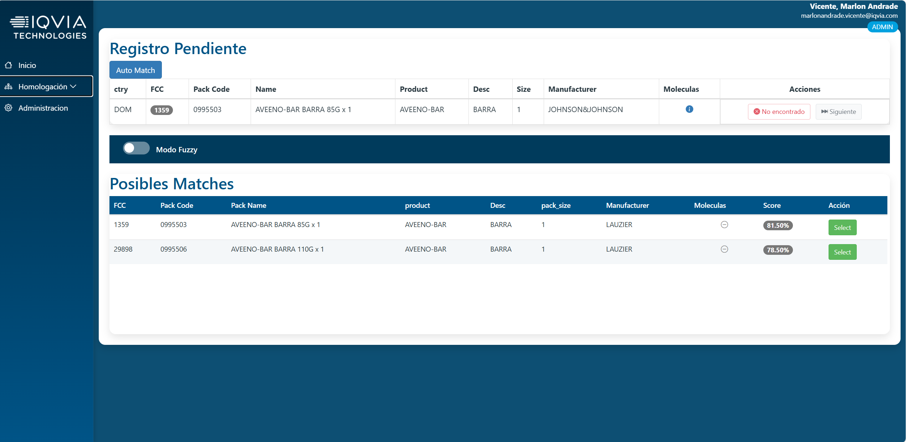
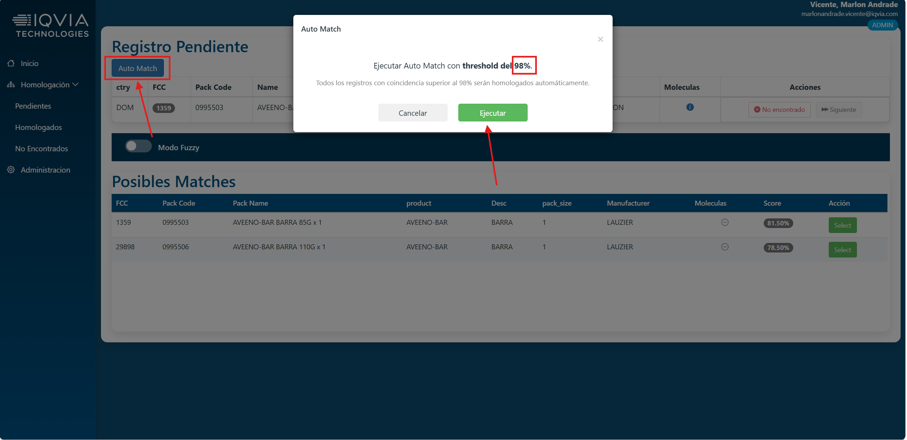
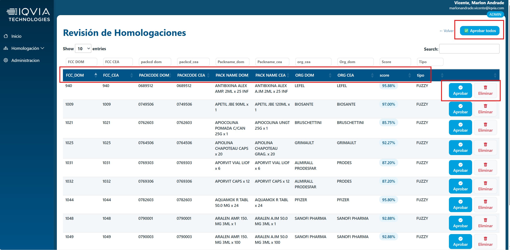
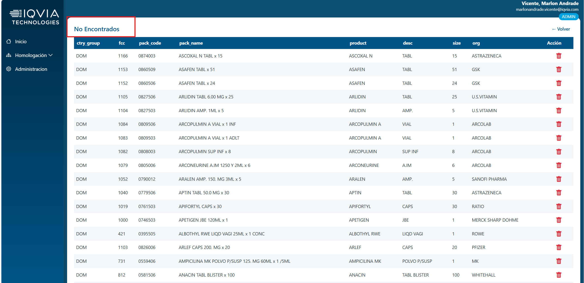
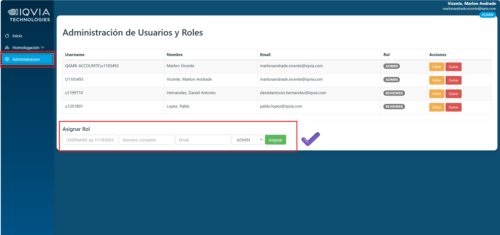
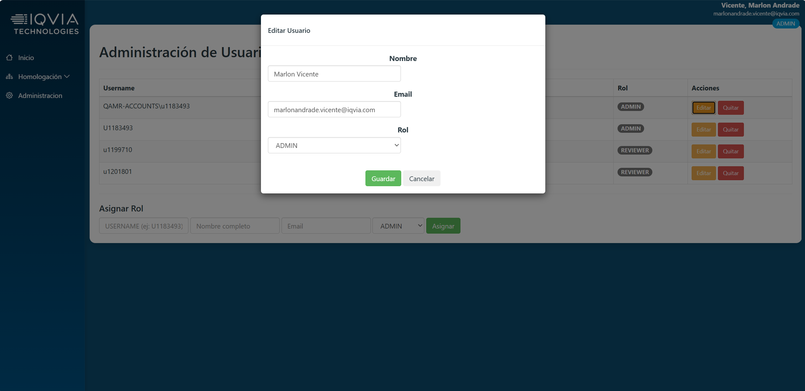
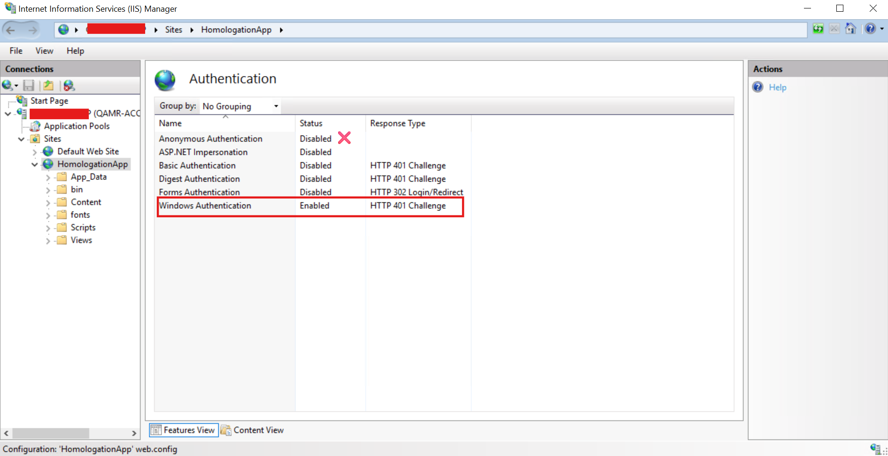
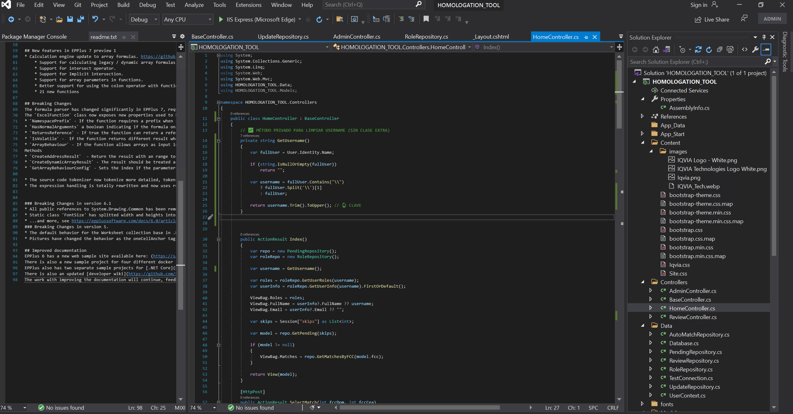

Fuzzy Homologation System
Enterprise system built to automate data homologation using fuzzy matching
(Jaro-Winkler and Soundex). Includes SSO authentication and role-based access.
Workflow

Main dashboard with auto match, manual match, and workflow actions.

Automatic fuzzy matching process.
Manual selection of homologation.

Homologated records view.

Records marked as not found.
Admin & Security

Admin dashboard.

User role management.
Architecture

IIS + Windows Authentication configuration.

Backend implementation in ASP.NET MVC.